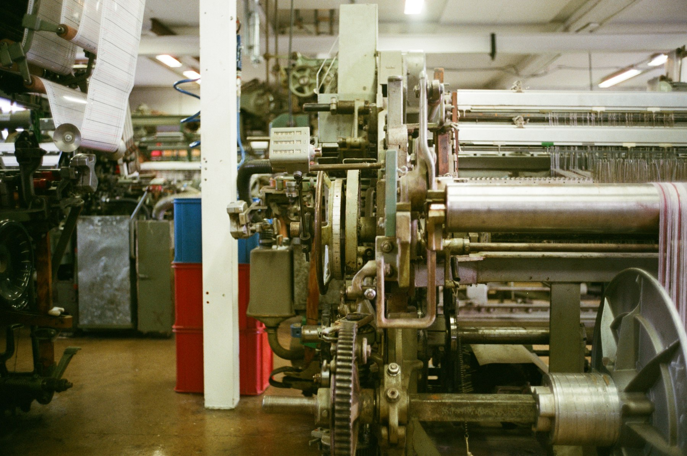

The same shade, on the next lot.
Every lot is read on a spectrophotometer. A roll above ΔE 0.8 does not ship.
Bursa
FILORA Group weaves scarves in a 9,600 m² plant in Bursa. 640 people work in the company. The head office has been in Eyüp since 2011.
In 2008 FILORA sold more scarves than any other firm in Turkey.

Roll
1847 B
Width
151.8 cm
Shade gap
0.6
Weight
118 g/m²
When the cloth arrives the pattern stays put.
Problem
Width narrows and the hand changes, so the same pattern no longer fits. We staple the lot report to the roll. Shade, width, and the wash note are known before the goods leave.
Benefits
Every lot is read on a spectrophotometer. A roll above ΔE 0.8 does not ship.
Four pieces of the quality you approved go out. The tracking number is written to your mail the same day.
A small trial and a 4,180 metre order go into the same planning book.
Shrinkage, rub fastness, and width after washing are stapled into every bale. A 152 cm promise still holds at the end of the roll.
Process
Say where the cloth will be sewn, the metres, and the week you need.
In 11 days you have a cut piece and the laboratory note.
After approval, the loom day and the shipping week arrive in writing.
Mill
FILORA Group weaves scarves in a plant in Bursa with 9,600 m² of floor. 640 people work in the company. The head office has stood in Eyüp since 2011. In 2008 FILORA sold more scarves than any other firm in Turkey. Staff study communication, customer focus, and commercial thinking. Future managers study leadership, teamwork, and how a group is organised.
9,600 m²
scarf plant in Bursa
640
people
2008
most scarves in Turkey
2011
head office in Eyüp
When the second shirting lot arrived we did not recut the pattern for a shade drift. Across the last 7 months, 4 lots stayed at or under ΔE 0.6.
We started with a 380 metre trial. Work jacket twill at 214 g/m². Width on every roll stayed between 151.6 and 152.2 cm.
When the canvas hand changed from lot to lot, the shop opened returns. The note inside the roll lets the team say the same sentence.
Questions
380 metres. That floor does not apply to a sample. Sample length is cut between 4 and 8 metres.
Shirting poplin from 112 to 128 g/m², workwear twill from 198 to 246 g/m², and home textile canvas from 230 to 280 g/m². The fibre is 100 percent cotton, or 67 percent cotton and 33 percent polyester.
Cutting the sample and shipping inside Turkey is 1,850 TL. That amount comes off the invoice once the first invoice passes 380 metres.
If the shipment report is above ΔE 1.2, we take the roll back within 15 days. Return freight is ours. On a dyed special shade, the promise depends on the laboratory dip you approved.
On sales to EU countries, the certificate of origin and the invoice are ours. You choose the customs broker. 41 percent of 2025 shipments went to Romania, Bulgaria, and Germany.
If yarn is late we write, and the new day is in the same message. The dye line keeps a 4 day buffer. A delay past that buffer is written into the contract.
We do not keep ready stock. Every roll is woven to the order. We do not send a leftover roll and call it a similar shade.
A new buyer pays 40 percent when the order is confirmed, and the rest before shipment. After three orders close cleanly, 30 day terms open.
Request
The sample fee comes off the first order. Rolls above ΔE 1.2 come back within 15 days.